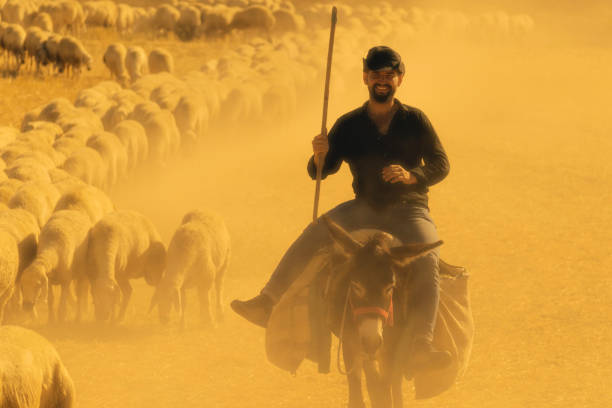

Meet the Team

Eve Mathias
Founder & Community Lead

John Mwangi
Technical Lead

Aisha Abdullahi
Field Coordinator
Building sustainable futures for pastoralist communities through innovation and collaboration.
Our goal is to empower pastoralist communities by improving access to markets, climate information, and digital tools that support resilience and growth. We focus on practical solutions that directly address challenges faced in daily life, from livestock management to community collaboration.
A world where pastoralists thrive as innovators, contributors, and leaders in sustainable development, with technology and knowledge as their allies.
Founder & Community Lead
Technical Lead
Field Coordinator